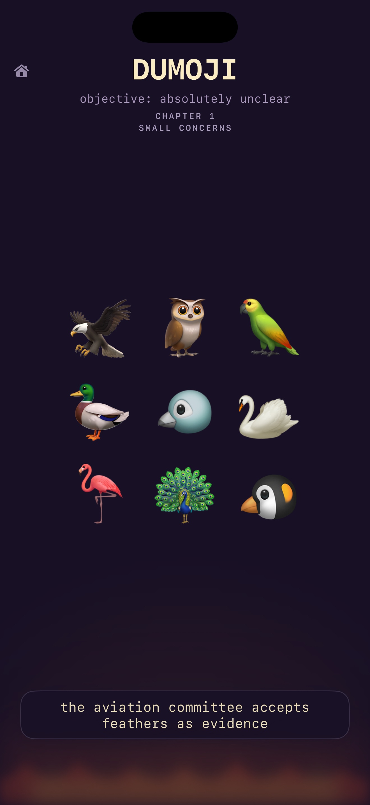
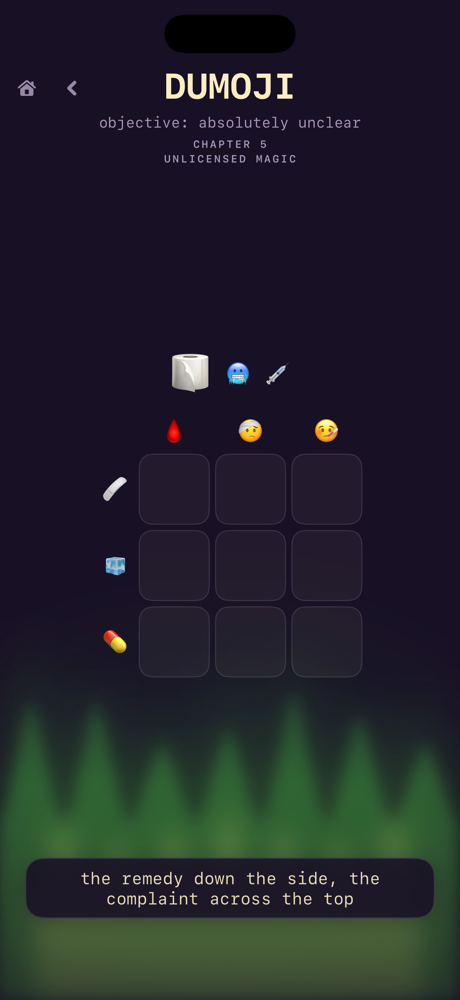
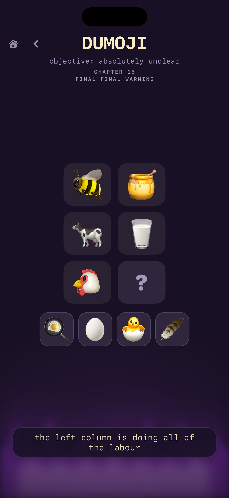

Different puzzle systems
Find anomalies, connect analogies, reconstruct chronology, solve grids, match memories, and more.
A tiny puzzle game for curious minds
Read the emojis, find the hidden relationship, and make your best guess. Every solved mystery comes with a tiny joke and a suspicious amount of satisfaction.
The game
Dumoji is a collection of authored little mysteries. Some are visual, some are logical, and some are simply committed to being weird.
What is inside
Made for short sessions, long pauses, and the moment when an answer suddenly becomes obvious.
Find anomalies, connect analogies, reconstruct chronology, solve grids, match memories, and more.
The first chapters are free. One optional, non-consumable purchase unlocks the rest of the campaign.
No ads, subscriptions, accounts, or paid hints. Your progress and settings stay on your device.
Play in English or Türkçe, on iPhone and iPad, with the same strange little mysteries.
A peek inside
Every chapter has its own mood, mechanic, and opportunity to make a very confident wrong guess.



The rhythm
Look closely. The strange detail is usually doing more work than it admits.
Try a relationship, sequence, rule, or category. Dumoji will wait.
Commit to your guess. A good answer gets a joke; a wrong answer gets another look.
Need a hand?
Find purchase help, troubleshooting steps, and a direct way to contact the developer.